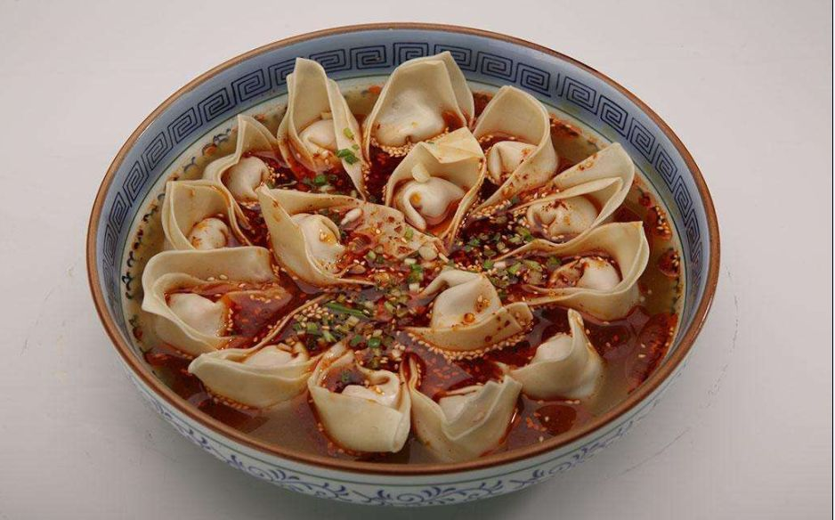

制作方法
猪肉末放入碗中，加入清水向一个方向搅拌均匀，在加入打散的蛋液、盐、姜汁、香油、味精、料酒、胡椒粉继续搅拌成糊状，制成馅料。
取抄手皮，将馅料放入面皮正中，对叠成三角形，再将左右两角尖想中间折叠。
在碗中放入盐、味精、胡椒粉、高汤对好底料。
锅内放水煮沸，放入抄手，煮熟后用漏勺捞出，放入装有底料的碗中即可。
- 
抄手，宋代《武林旧事》中记载：“享先则以馄饨，有‘冬馄饨，年馎饦’之谚。贵家求奇，一器凡十余色，谓之‘百味馎饦’”。
猪肉末放入碗中，加入清水向一个方向搅拌均匀，在加入打散的蛋液、盐、姜汁、香油、味精、料酒、胡椒粉继续搅拌成糊状，制成馅料。
取抄手皮，将馅料放入面皮正中，对叠成三角形，再将左右两角尖想中间折叠。
在碗中放入盐、味精、胡椒粉、高汤对好底料。
锅内放水煮沸，放入抄手，煮熟后用漏勺捞出，放入装有底料的碗中即可。
Copyright ©201812101 xhy